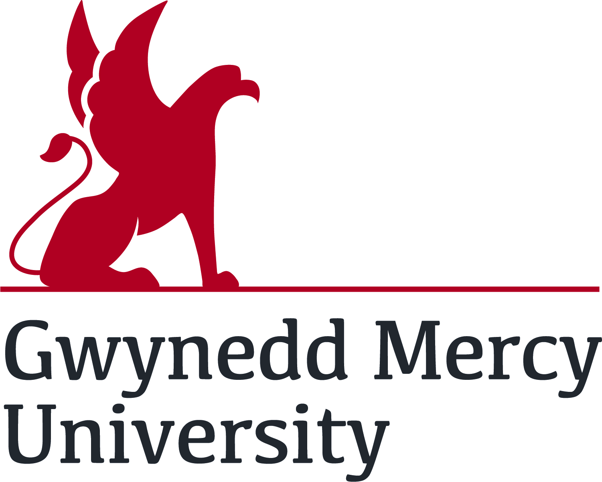

Home
Classes
Students
Faculty
Contact Us
Welcome to the Student Experience!
Podcasts
Please check out our podcasts that go in depth on the CIS program!
CIS Video Interviews
Take a look at these interviews where we get a chance to talk with faculty and students about the GMercyU CIS experience!